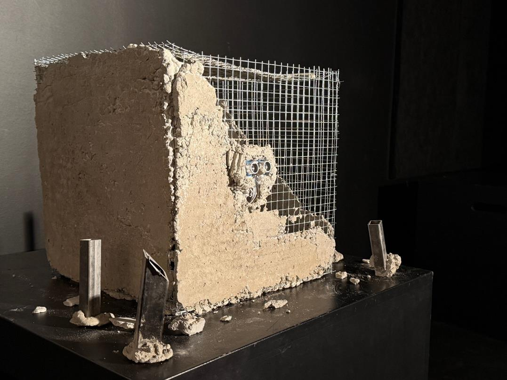
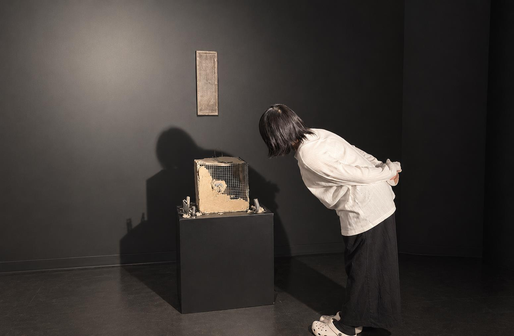
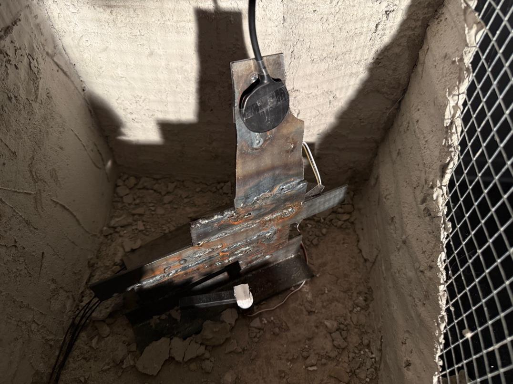

WORK 01 / INTERACTIVE SOUND SCULPTURE
Built Un-built
As visitors approach a concrete-and-metal sculpture, metallic impacts accelerate and fill the gallery with amplified sound.
2026

View project details
Built Un-built takes the form of a damaged construction fragment made from concrete, metal, and wire mesh. An ultrasonic sensor detects how close a visitor stands; concealed mechanisms strike metal faster as the distance decreases. Contact microphones capture and amplify these impacts into a growing, uneasy soundscape.
Construction noise usually stays in the background of city life. By making that noise respond directly to a person’s approach, the installation asks visitors to confront the disruption produced by repeated building, demolition, and rebuilding.

